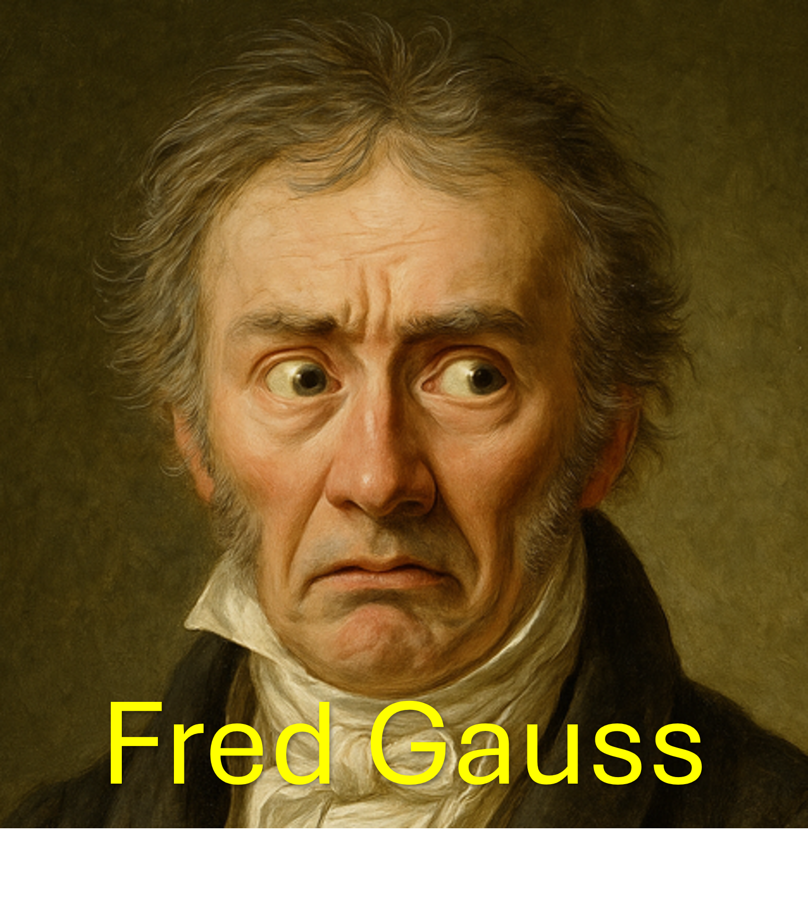
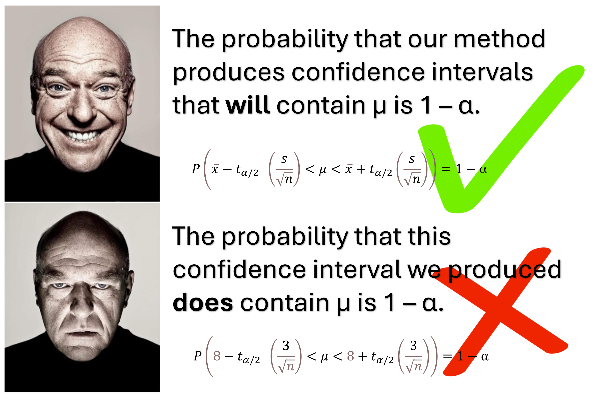

The Gaussing Game
Every day, Fred thinks about a new unknown number he wants to estimate. He takes a random sample relevant to that number and computes a 95% confidence interval for it.
Given only the information provided by the data, Fred will always choose that the parameter is in the interval. Fred can never know whether he is exactly right or wrong each time he makes this decision, but now you can! Is Fred right today? Make a choice and find out.

How to play: Simply read Fred's claim for the day and decide if you agree with Fred or not. Once you decide, the answer will appear. Will you always agree with Fred or do you think you can do better?
Loading today’s puzzle…
Confidence Interval Illustration

The confidence interval is one of the simplest and most useful tools in statistics. A 95% confidence interval is a statistical method (from sampling to computation) that is designed (under some assumptions ) to use data to capture an unknown parameter 95% of the time that it is employed.
Important Details About Confidence Intervals
Before creating your 95% confidence interval, you have a 95% chance (i.e., probability = 0.95) to sample data that computes to an interval which contains the unknown parameter. After you have selected your sample and computed the interval, that language of probability no longer makes sense to use for the actual interval since this interval is already fixed instead of random (the intervals that the method has yet to produce are what are considered random). That is, it is incorrect to say that there is a 0.95 probability that the parameter is in the interval. However, by virtue of knowing that the method was executed correctly, it is reasonable to act as though the parameter is in the interval instead of outside it. That’s why we call it a “confidence” interval.
Why do we make a big deal about not calling it probability after the fact? It helps prevent incorrect usage of confidence intervals. For example, recomputing a 99% confidence interval after seeing the result from a 95% interval and then reporting the latter interval as though it was the one you had planned for in the first place is incorrect (and quite dishonest).
For more on this, here's Hank.
